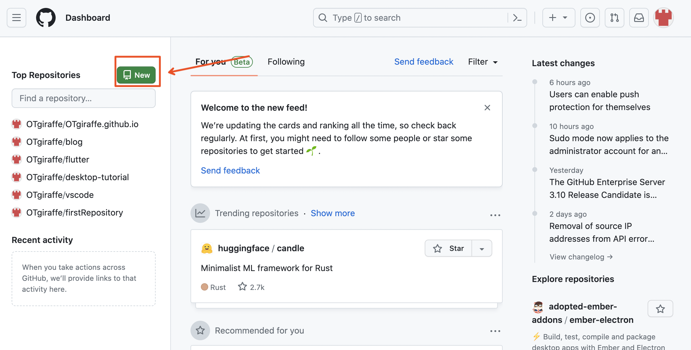
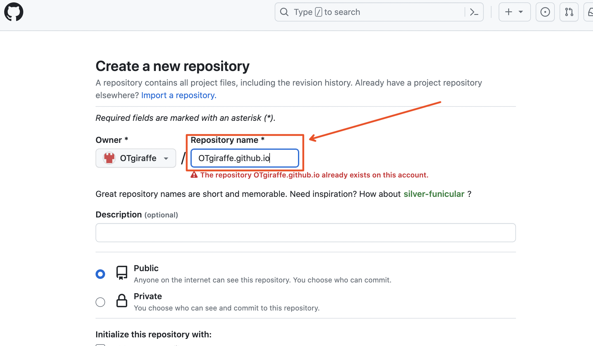
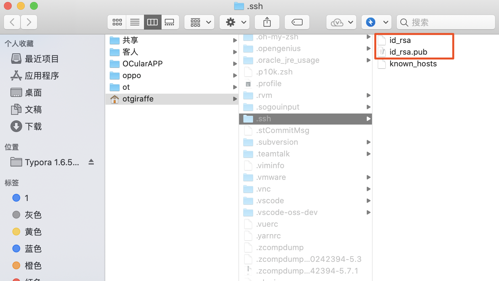
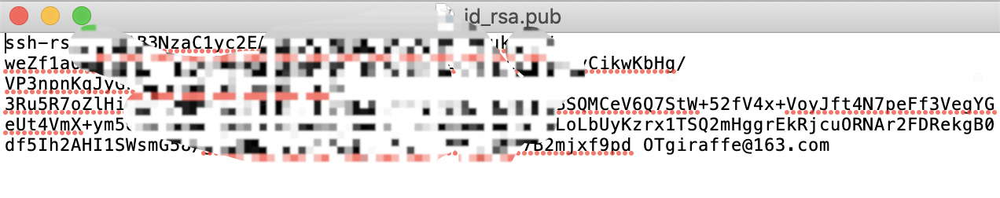
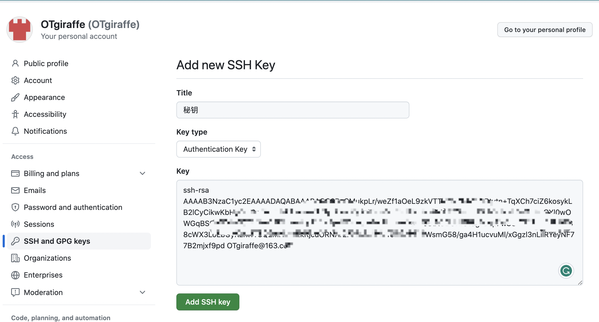

大部分人是没有私人服务器的，所以本篇指导的是用github的服务器，将个人网站是部署在github上
主要内容：
- 创建用来部署个人网站github仓库，
- 在本地用Hexo创建个人网站
- 将个人网站部署到GitHub仓库
- 访问个人网站
注册github账号
ps: 有github账号可跳过这步
注册地址：https://github.com/signup?source=login
用邮箱注册GitHub账号
创建github个人仓库
登录github，如下点击New按钮，进入创建仓库界面
创建个人仓库，这里的仓库名字要固定写法：用户名.github.io，如：OTgiraffe.github.io，这里的用户名要替换成你的
Git管理
Git 是目前世界上最先进的分布式版本控制系统（没有之一）。这是使用 Git 的目的是为了将我们的网站从本地提交上服务器（GitHub）上面去。不懂得可以看廖雪峰老师的教程：https://www.liaoxuefeng.com/wiki/896043488029600
安装好Git后，设置 user.name 和 user.email 配置信息，这里设置为全局。
终端输入：
1 | git config --global user.name "你的GitHub用户名" |
回车，如：
1 | git config --global user.name "OTgiraffe" |
终端输入:
1 | git config --global user.email "你的GitHub注册邮箱" |
回车，如：
1 | git config --global user.email "OTgiraffe@163.com" |
配置github SSH秘钥
上面是你创建的个人github仓库，只有你有权限往仓库上传数据，所以在上传数据时，github会进行鉴定权限，也就是确定这个上传数据的是不是你，鉴权有两种方式：
- 账号密码
- SSH秘钥
上传数据账号密码鉴权在21年就已经禁止，如果你用账号密码上传会有以下提示
补充
所以只能用SSH秘钥鉴权方式
生成本地SSH秘钥
终端输入:
1 | ssh-keygen -t ras -C "你的github注册邮箱" |
如：
1 | ssh-keygen -t ras -C "OTgiraffe@163.com" |
直接三个回车，默认不需要密码，最后得到两个文件id_rsa和id_rsa.pub
将本地生成的秘钥添加到github
打开id_rsa.pub,将里面的内容全部复制
添加到github: Settings -> SSH and GPG keys ->new SSH key
测试添加github秘钥是否成功
终端输入：
1 | ssh -T git@github.com |
回车，你会看到:
1 | 1The authenticity of host 'github.com (207.97.227.239)' can't be established. |
选择 yes
1 | Hi OTgiraffe! You've successfully authenticated, but GitHub does not provide shell access. |
看到Hi就说明配置SSH成功了
安装个人网站生成工具Hexo
Hexo 是一个快速、简洁且高效的博客框架。Hexo 使用 Markdown（或其他渲染引擎）解析文章，在几秒内，即可利用靓丽的主题生成静态网页
安装Node.js
Hexo基于Node.js，因此需先安装Node.js，可以通过这里选择对应的电脑版本安装：https://nodejs.org/en/download/

是否安装成功，终端/cmd输入：
1 | node -v |
如果输出了node的版本号就说明成功了

安装Hexo
使用npm安装Hexo，终端输入：
1 | npm install -g hexo-cli |
用Hexo生成和配置个人网站
初始化个人网站
进入需创建的目录，终端输入:
1 | hexo init myBlog |


生成网页静态文件，终端输入：
1 | hexo generate |
可简写成
1 | hexo g |

启动服务预览文章，终端输入：
1 | hexo server |
可简写成
1 | hexo s |
遇到这种服务端口4000被占用，没有的话直接用：http://localhost:4000/ 访问

可以用如下命令启用另外的端口：
1 | hexo s -p 5000 |
浏览器打开网址：http://localhost:5000/
就能访问你刚启动本地个人网站了

个人网站部署到github服务器上
配置本地个人网站部署的服务器地址
在myBlog文件夹中，打开_config.yml文件找到deploy，添加如下参数：

代码：
1 | deploy: |
当然repo配置是我的地址，要替换成你的，在你第2步生成的github仓库中，进入到你的github仓库：

部署个人网站到github上
终端进入myBlog文件夹，终端输入：
1 | hexo deploy |
可简写成
1 | hexo d |
ps：通过以上命令将个人网站部署到github仓库，其中会检验SSH秘钥，是Hexo帮我们做的，我们只要按第3点配置好秘钥
访问个人网站
浏览器输入网址：用户名.github.io访问，如：otgiraffe.github.io
就可直接访问，部署到github到可访问存在一定延时，一般不超过一分钟。
主要参考这篇文章写